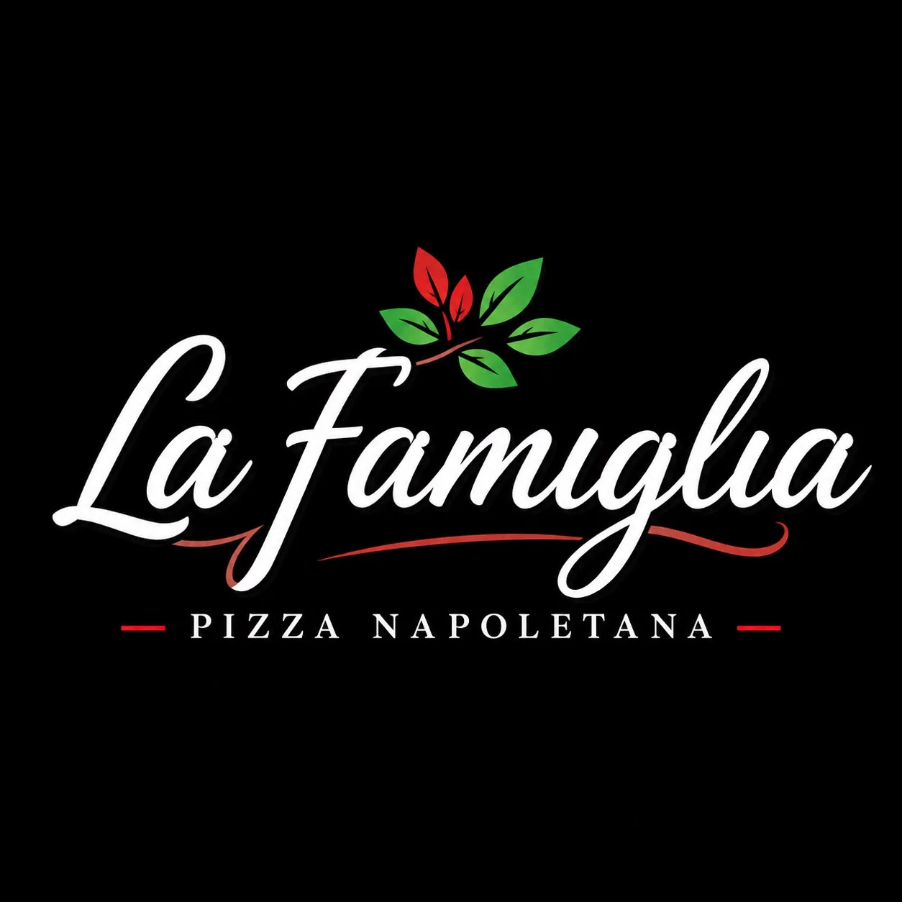
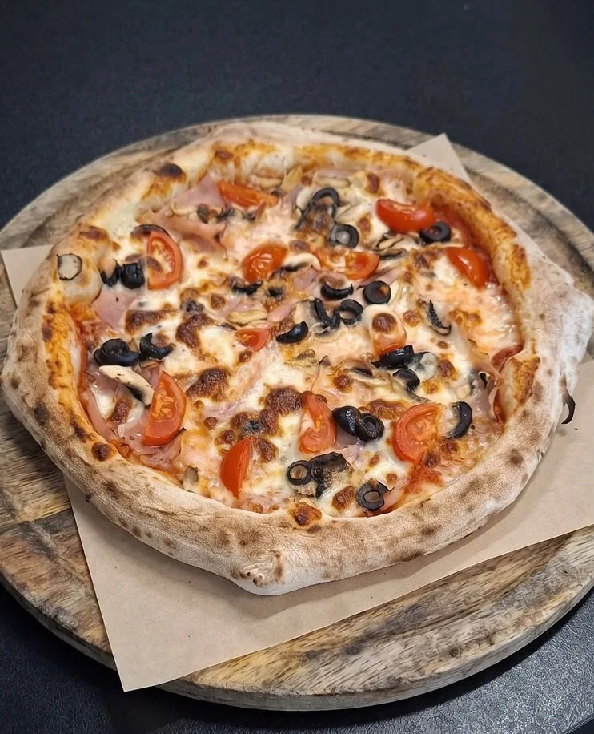
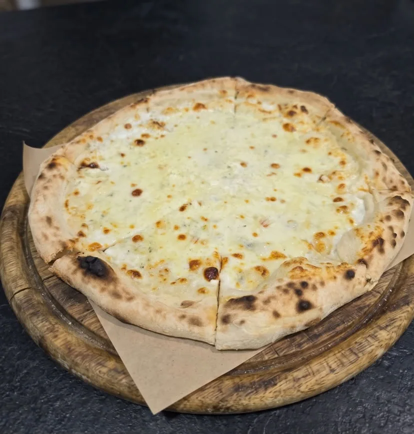
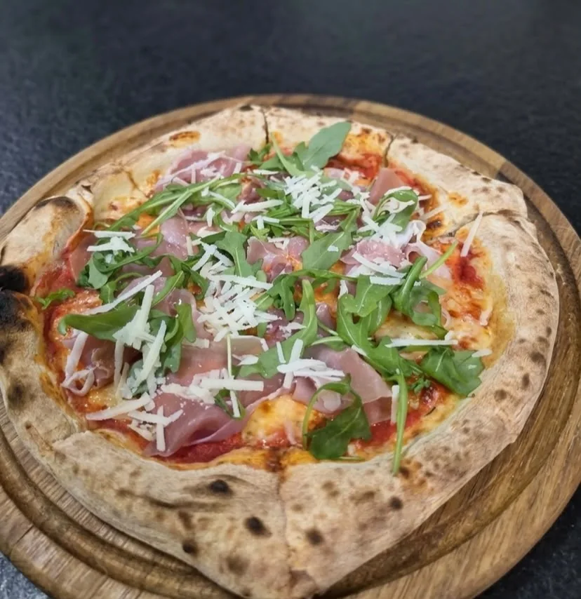
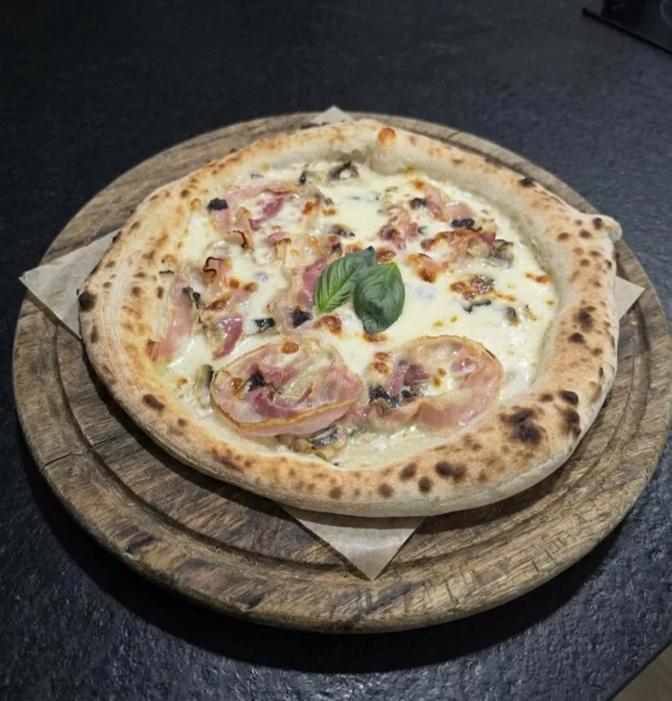
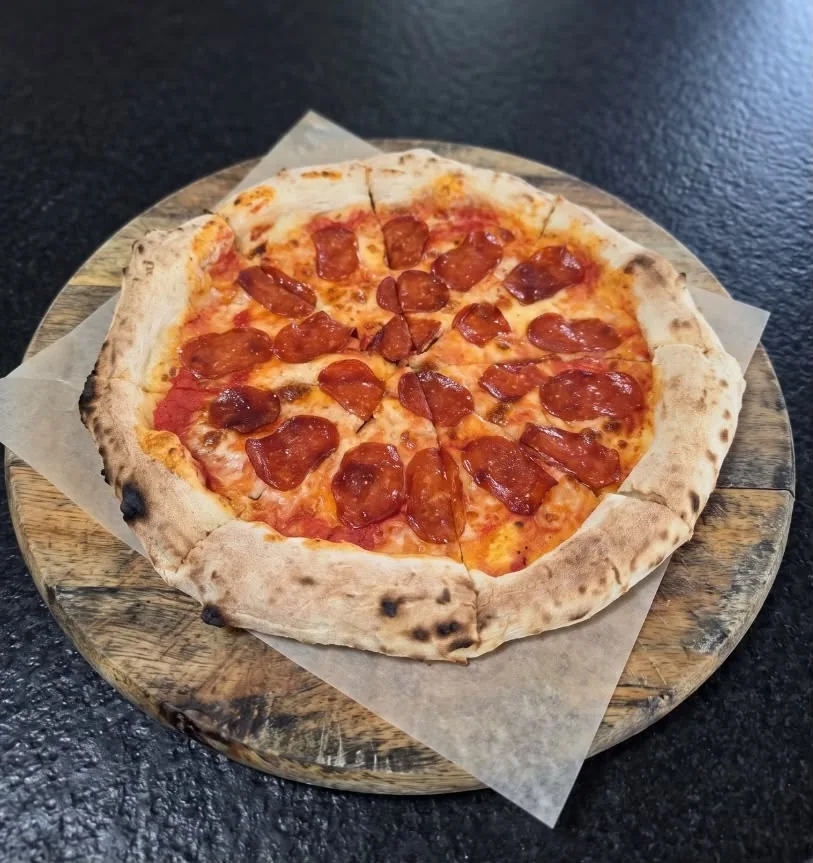

La Famiglia
Sos de roșii, fior di latte, ventricina picantă, stracciatella, pesto de fistic, busuioc proaspăt, parmezan.
35 lei

PIZZA NAPOLETANA · CONSTANȚA
La Famiglia — pizza napoletană, pregătită cu grijă și servită în Constanța, pe Bulevardul Mamaia 173.
DIN CUPTORUL NOSTRU
De la rețete clasice la combinații savuroase, găsește pizza potrivită pentru pofta ta.
Sos de roșii, fior di latte, ventricina picantă, stracciatella, pesto de fistic, busuioc proaspăt, parmezan.

Sos de roșii, fior di latte, busuioc proaspăt, parmezan.

Sos de roșii, fior di latte, prosciutto cotto, ciuperci champignon, măsline negre, roșii cherry, busuioc proaspăt.

Sos de roșii, fior di latte, ventricina picantă, busuioc proaspăt, parmezan.

Smântână de gătit, fior di latte, gorgonzola, provolone, parmezan.

Sos de roșii, fior di latte, prosciutto cotto, salam Napoli, ciuperci champignon, măsline negre, parmezan, busuioc proaspăt.

Smântână de gătit, fior di latte, mortadella, stracciatella, granella de fistic, busuioc proaspăt.

Sos de roșii, fior di latte, prosciutto crudo, rucola, parmezan fulgi.

Smântână de gătit, fior di latte, parmezan, ciuperci champignon, salată trufată, parmezan, busuioc proaspăt.

Sos de roșii, fior di latte, prosciutto cotto, pancetta, ventricina picantă, busuioc proaspăt, parmezan.

Sos de roșii, fior di latte, ton în ulei (scurs), ceapă roșie, porumb.

Sos de roșii, fior di latte, ciuperci champignon, ardei, ceapă roșie, măsline negre, busuioc proaspăt, parmezan.

Sos de roșii, fior di latte, salam Napoli, parmezan.

Sos de roșii, fior di latte, șuncă de pui, ciuperci champignon, măsline negre, porumb.

Sos de roșii, fior di latte, babic, ardei.
 FATTO CON
FATTO CONPOVESTEA NOASTRĂ
Credem că cele mai frumoase amintiri se nasc în jurul mesei. De aceea, punem grijă în fiecare detaliu, de la ingrediente până la ultima felie.
La Famiglia înseamnă ospitalitate, gust bun și bucuria de a împărți ceva delicios cu oamenii dragi.
Vino să ne cunoști →DIN LUMEA LA FAMIGLIA
Un strop de Italia, ingrediente proaspete și momente care merită savurate.
TE AȘTEPTĂM
Ai poftă de pizza? Ne găsești la adresa de mai jos. Descoperă atmosfera și pizza noastră napoletană.
Luni – Duminică: 12:00 – 22:00